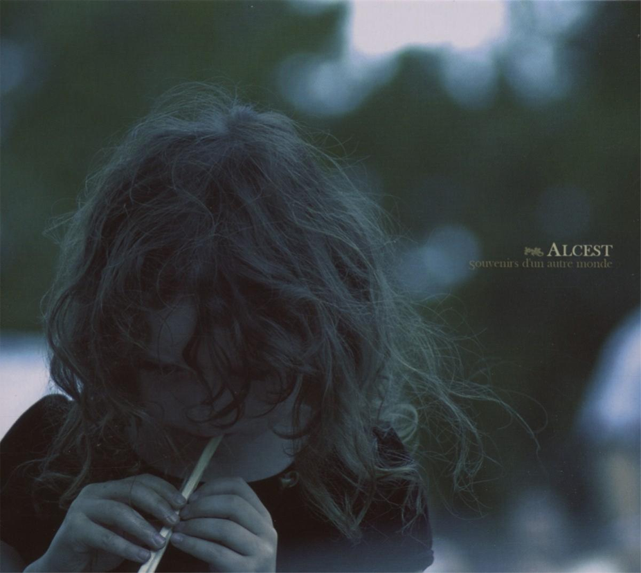

Souvenirs d'un autre monde
Alcest
2007 • 6 songs • 41:20
Genres: Shoegaze, Blackgaze, Post-Metal
Post-Rock
The translation of the album title, Memories of Another World, presents an ambiguous theme. The album could musically represent another life, propelled by the themes of fond remembrance, longing, happiness, sorrow, and an eventual gentle passing.
This album is melancholic, ethereal, atmospheric and soothing.
Denser and brighter
Darker, more gloomy and post-punky